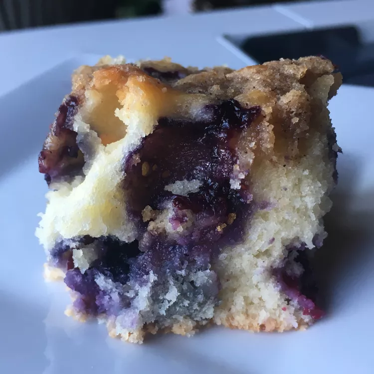

Source: allrecipes.com
Blueberry Buckle
This blueberry buckle makes a great coffee cake or dessert. I make this at least twice when blueberries are in season.
Ingredients
- ¾ cup white sugar
- ¼ cup shortening
- 1 large egg
- 2 cups all-purpose flour
- 2 teaspoons baking powder
- ½ teaspoon salt
- ½ cup milk
- 2 cups fresh blueberries
Topping
- ½ cup white sugar
- ⅓ cup all-purpose flour
- ¼ cup butter, softened
- ½ teaspoon ground cinnamon
Directions
- Preheat the oven to 375 degrees F (190 degrees C). Grease an 8x8-inch pan.
- Cream sugar, shortening, and egg in a large bowl until light and fluffy. Stir together flour, baking powder, and salt in a separate bowl. Add flour mixture to sugar mixture in 2 batches, alternating with milk, beating batter briefly after each addition. Fold in blueberries. Pour into the prepared pan.
- Make topping: Combine sugar, flour, butter, and cinnamon in a bowl; mix with your hands until crumbly. Sprinkle over cake batter.
- Bake in the preheated oven until a toothpick inserted into the center comes out clean, 25 to 30 minutes.